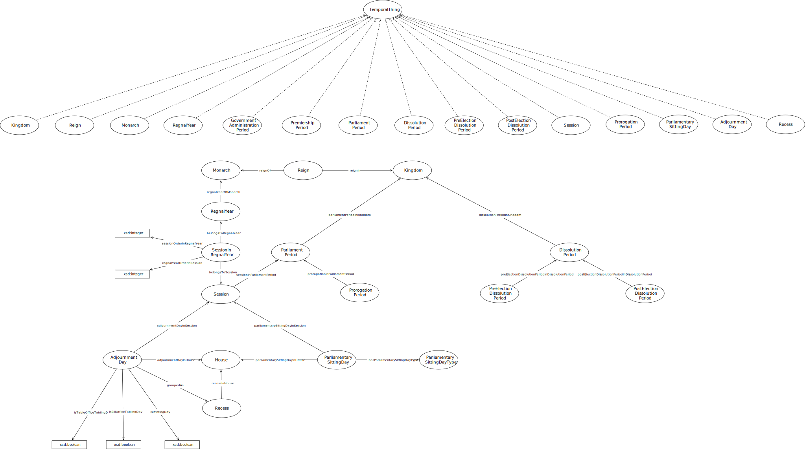

IRI: http://parliament.uk/ontologies/time-period/AdjournmentDay
IRI: http://parliament.uk/ontologies/time-period/DissolutionPeriod
IRI: http://parliament.uk/ontologies/time-period/GovernmentAdministrationPeriod
IRI: http://parliament.uk/ontologies/time-period/House
IRI: http://parliament.uk/ontologies/time-period/HybridSittingDay
IRI: http://parliament.uk/ontologies/time-period/Kingdom
IRI: http://parliament.uk/ontologies/time-period/ParliamentPeriod
IRI: http://parliament.uk/ontologies/time-period/PostElectionDissolutionPeriod
IRI: http://parliament.uk/ontologies/time-period/PreElectionDissolutionPeriod
IRI: http://parliament.uk/ontologies/time-period/PremiershipPeriod
IRI: http://parliament.uk/ontologies/time-period/PrintingDay
IRI: http://parliament.uk/ontologies/time-period/ProrogationPeriod
IRI: http://parliament.uk/ontologies/time-period/PublicBillOfficeNonSittingTablingDay
IRI: http://parliament.uk/ontologies/time-period/Recess
IRI: http://parliament.uk/ontologies/time-period/Reign
IRI: http://parliament.uk/ontologies/time-period/Session
IRI: http://parliament.uk/ontologies/time-period/SittingDay
IRI: http://parliament.uk/ontologies/time-period/TableOfficeNonSittingTablingDay
IRI: http://parliament.uk/ontologies/time-period/TemporalThing
IRI: http://parliament.uk/ontologies/time-period/Term
IRI: http://parliament.uk/ontologies/time-period/VirtualSittingDay
IRI: http://parliament.uk/ontologies/time-period/adjournmentDayInTerm
IRI: http://parliament.uk/ontologies/time-period/dissolutionPeriodInKingdom
IRI: http://parliament.uk/ontologies/time-period/hyrbridSittingDayInTerm
IRI: http://parliament.uk/ontologies/time-period/parliamentPeriodInKingdom
IRI: http://parliament.uk/ontologies/time-period/postElectionDissolutionPeriodInDissolutionPeriod
IRI: http://parliament.uk/ontologies/time-period/preElectionDissolutionPeriodInDissolutionPeriod
IRI: http://parliament.uk/ontologies/time-period/printingDayInRecess
IRI: http://parliament.uk/ontologies/time-period/printingDayInTerm
IRI: http://parliament.uk/ontologies/time-period/prorogationInParliamentPeriod
IRI: http://parliament.uk/ontologies/time-period/publicBillOfficeNonSittingTablingDayInRecess
IRI: http://parliament.uk/ontologies/time-period/publicBillOfficeNonSittingTablingDayInTerm
IRI: http://parliament.uk/ontologies/time-period/recessInHouse
IRI: http://parliament.uk/ontologies/time-period/recessInSession
IRI: http://parliament.uk/ontologies/time-period/sessionInParliamentPeriod
IRI: http://parliament.uk/ontologies/time-period/sittingDayInTerm
IRI: http://parliament.uk/ontologies/time-period/tableOfficeNonSittingTablingDayInRecess
IRI: http://parliament.uk/ontologies/time-period/tableOfficeNonSittingTablingDayInTerm
IRI: http://parliament.uk/ontologies/time-period/termInHouse
IRI: http://parliament.uk/ontologies/time-period/termInSession
IRI: http://parliament.uk/ontologies/time-period/virtualSittingDayInTerm
This HTML document was obtained by processing the OWL ontology source code through LODE, Live OWL Documentation Environment, developed by Silvio Peroni.